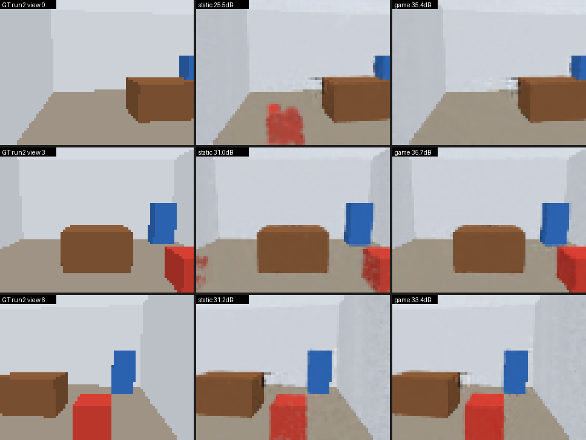
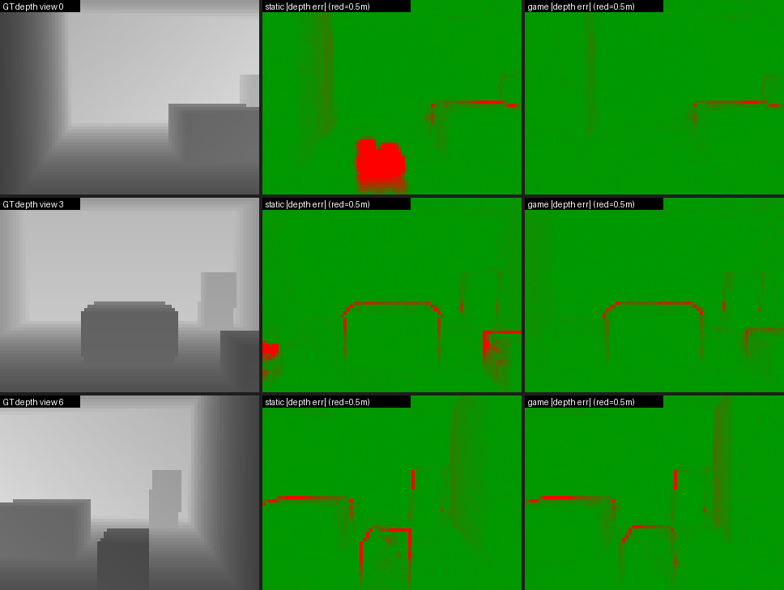
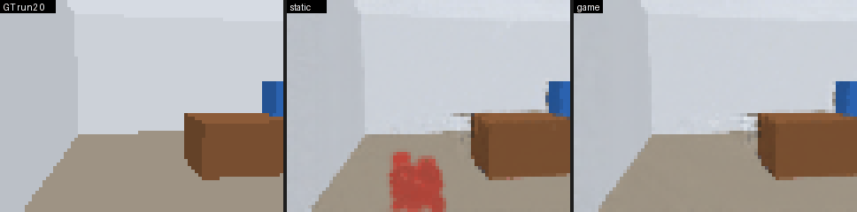
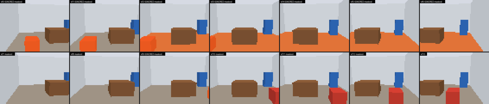
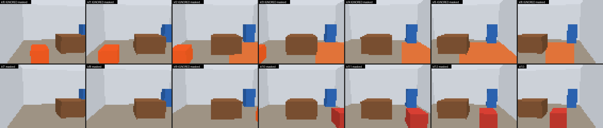

CVPR 2026 の GaME: Gaussian Mapping for Evolving Scenes のコア（動的シーン適応とキーフレーム管理）を、CUDA・SAM・実データなしで実行できる形に移植し、「見ていない間に椅子が動いた部屋」で静的マップと比較した。
本家の実装は CUDA ラスタライザ（diff-gaussian-rasterization / FlashSplat）、faiss-gpu、SAM マスク付きの RGB-D データセット（Flat / Aria）を前提にしていて、GPU のない環境では動かない。そこで src/entities/game.py のアルゴリズムを読み取り、次の 3 つを差し替えて同じ制御フローと閾値で回せるようにした。
| 本家 | プロトタイプ | 役割 |
|---|---|---|
| FlashSplat CUDA ラスタライザ | gameproto/splat.py | PyTorch CPU の微分可能 3DGS レンダラ。色・深度・alpha・可視性・投影座標を返し、削除検出が使う used_mask（一部の Gaussian だけを描く）に対応 |
| Flat / Aria + SAM マスク | gameproto/scene.py | 床・壁・箱からなる合成ルームをレイキャストして RGB-D を生成。インスタンスマスクが SAM マスクの代わり。物体を run の間で動かせる |
src/entities/game.py | gameproto/game.py | 追加検出 → 共可視キーフレームへのオクルージョン伝播、削除検出 → 矛盾 Gaussian の刈り込みと伝播、オクルージョンマスク付き最適化、ignored_frames。change_detection=False で静的マップのベースラインになる |
最後に、無視されていないキーフレームからランダムに選んで L1（色・深度）+ 等方性正則化で最適化する。オクルージョンマスクの画素は損失から外れるので、古い観測がマップを引き戻さない。
解像度 80×60、各キーフレームで 25 反復（単一フレーム）+ 60 反復（サンプリング）。先頭フレームのみ 120 反復。CPU 4 コアで静的マップが約 19 分、GaME が約 9 分。static と game はコードが同一で、違いは変更検出の on/off だけ。run 1 直後の評価は両者とも 32.68 dB / 0.0116 m で完全に一致する。
| system | PSNR | 深度 L1 | Gaussian 数 | 旧位置 A に残存 | 新位置 B | オクルージョンマスク | 所要時間 |
|---|---|---|---|---|---|---|---|
| static（変更検出なし） | 28.91 dB | 0.0274 m | 6648 | 249 | 220 | 0 | 1164 s |
| game（GaME 移植） | 34.24 dB | 0.0113 m | 6155 | 2 | 121 | 13 | 546 s |



オレンジは各キーフレームのオクルージョンマスク（最適化から外される画素）。上段が run 1、下段が run 2 のキーフレーム。

removal_coverage_threshold）が、画面の半分を占める床マスクに当たったため。
ignored_frames に入った。きっかけは 2 つで、旧位置を見ていたフレームは椅子マスクがオクルージョンで 100% 覆われ（occlusion_ignore_threshold = 0.2 に対して）、新位置を床として見ていたフレームは再投影の cover_score が 0.2 を超えた。数値上は困らないが、論文が掲げる「情報を最大限保持する」観点では、フレームごと捨てるのではなくマスク単位で除外し続ける設計に緩める余地がある。ignored_frames をやめてオクルージョンマスクだけで運用する variant を追加し、同じシナリオで PSNR と保持キーフレーム数を比較する。本家への改善提案の根拠になる。cd game-proto
pip install numpy scipy pillow imageio pytest
pip install torch --index-url https://download.pytorch.org/whl/cpu
python -m pytest -q tests # 13 テスト、約 100 秒
python demo.py # static と game を比較、output/ に書き出し（約 30 分）
python demo.py --only game --tiles 3 --out output/tiled # マスク分割版（約 9 分）途中経過は output/log.txt、数値と検出イベントは output/metrics.json に残る。